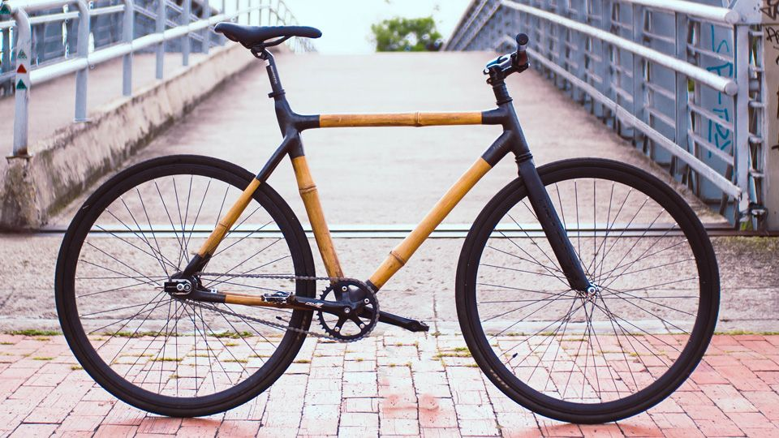
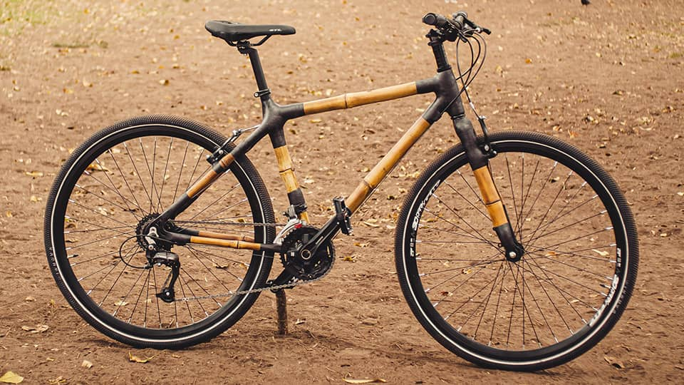
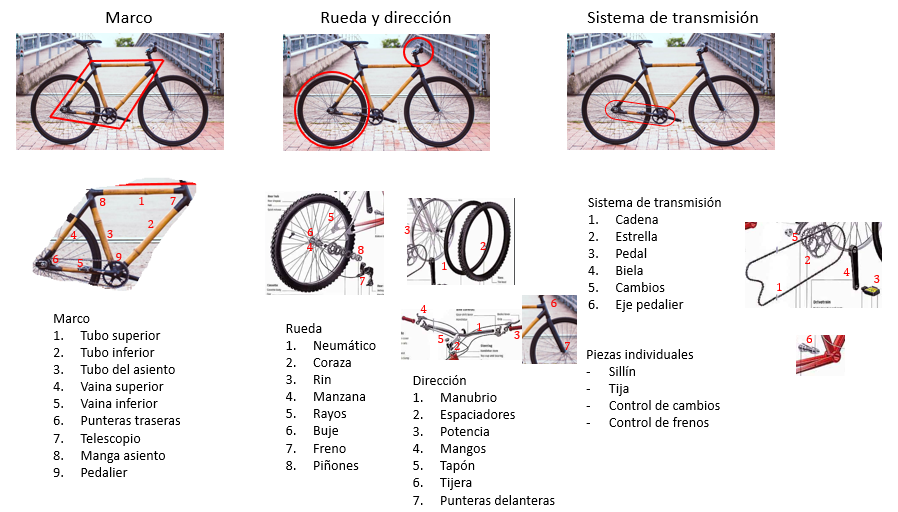

Urbana contrapedal
Este modelo permite practicar disciplinas deportivas como el polo en bicicleta y además andar por terrenos urbanos no muy agrestes debido a su bajo peso, su tecnología de transmisión contrapedal y la ausencia de frenos, lo cual la hace bastante atractiva para personas que deseen incursionar en este tipo de disciplina.

Urbana híbrida
Esta es una bicicleta capaz de andar por diferentes terrenos urbanos con facilidad debido a su sistema de cambios, su sistema de frenos y su resistencia adicional en la parte inferior del marco, lo cual la hace muy atractiva para los usuarios recurrentes de bicicleta en las ciudades.

Piezas a fabricar.
- Tubo superior.
- Tubo inferior.
- Tubo asiento.
- Vainas.
- Punteras.
- Telescopio.
- Manga asiento.
- Pedalier.
- Manubrio.
- Tijera.
- Punteras delanteras y traseras.
Piezas adquiridas.
- Cadena.
- Estrella.
- Pedal.
- Biela.
- Cambios.
- Eje pedalier.
- Neumático.
- Coraza.
- Manzana.
- Rayos.
- Buje.
- Freno.
- Piñones.
- Espaciadores.
- Potencia.
- Mangos.
- Tapón.
- Sillín.
- Tija.
- Control de cambios.
- Control de frenos.